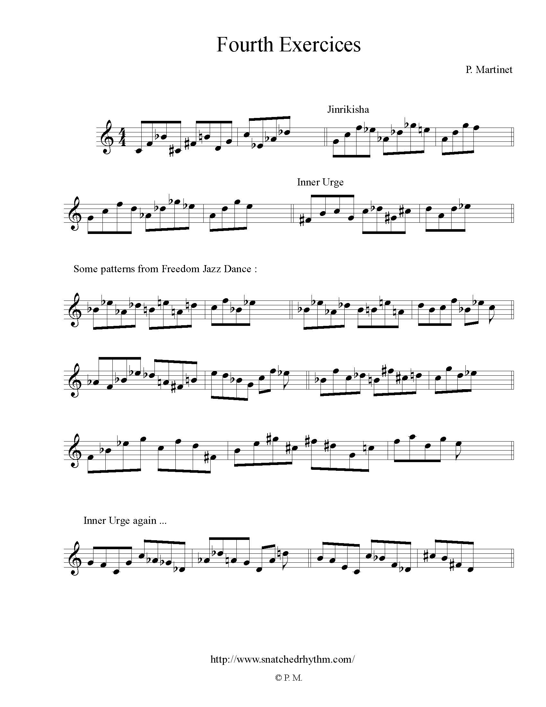

At a certain point of my study, I had to play "freedom jazz dance" for an exam. It was a tough challenge for me because, in a way, it sounds really modern to me, but it is constructed on just one only chord.
Just one chord, no changes. What to do to sound modern ? At this time, I was almost confrontated to scores with challenging changes and had no clues of what to do.
I observed the theme and his construction, and understood how important were the fourth.
Since that time, fourth have a special feeling for me, and I propose you here a selection of melodic ideas from jazzmen using this interval.
